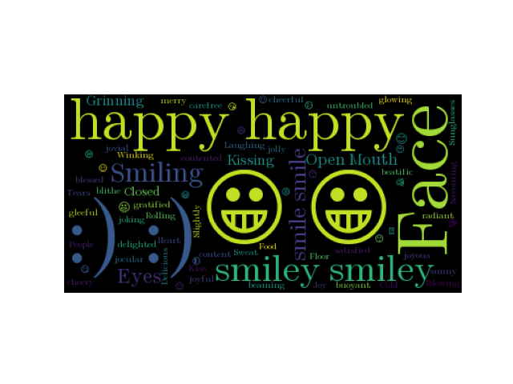

Note
Click here to download the full example code
Emoji Example¶
A simple example that shows how to include emoji. Note that this example does not seem to work on OS X, but does work correctly in Ubuntu.
There are 3 important steps to follow to include emoji: 1) Read the text input with io.open instead of the built in open. This ensures that it is loaded as UTF-8 2) Override the regular expression used by word cloud to parse the text into words. The default expression will only match ascii words 3) Override the default font to something that supports emoji. The included Symbola font includes black and white outlines for most emoji. There are currently issues with the PIL/Pillow library that seem to prevent it from functioning correctly on OS X (https://github.com/python-pillow/Pillow/issues/1774), so try this on ubuntu if you are having problems.
import io
import os
import string
from os import path
from wordcloud import WordCloud
# get data directory (using getcwd() is needed to support running example in generated IPython notebook)
d = path.dirname(__file__) if "__file__" in locals() else os.getcwd()
# It is important to use io.open to correctly load the file as UTF-8
text = io.open(path.join(d, 'happy-emoji.txt')).read()
# the regex used to detect words is a combination of normal words, ascii art, and emojis
# 2+ consecutive letters (also include apostrophes), e.x It's
normal_word = r"(?:\w[\w']+)"
# 2+ consecutive punctuations, e.x. :)
ascii_art = r"(?:[{punctuation}][{punctuation}]+)".format(punctuation=string.punctuation)
# a single character that is not alpha_numeric or other ascii printable
emoji = r"(?:[^\s])(?<![\w{ascii_printable}])".format(ascii_printable=string.printable)
regexp = r"{normal_word}|{ascii_art}|{emoji}".format(normal_word=normal_word, ascii_art=ascii_art,
emoji=emoji)
# Generate a word cloud image
# The Symbola font includes most emoji
font_path = path.join(d, 'fonts', 'Symbola', 'Symbola.ttf')
wc = WordCloud(font_path=font_path, regexp=regexp).generate(text)
# Display the generated image:
# the matplotlib way:
import matplotlib.pyplot as plt
plt.imshow(wc)
plt.axis("off")
plt.show()
Total running time of the script: ( 0 minutes 0.371 seconds)